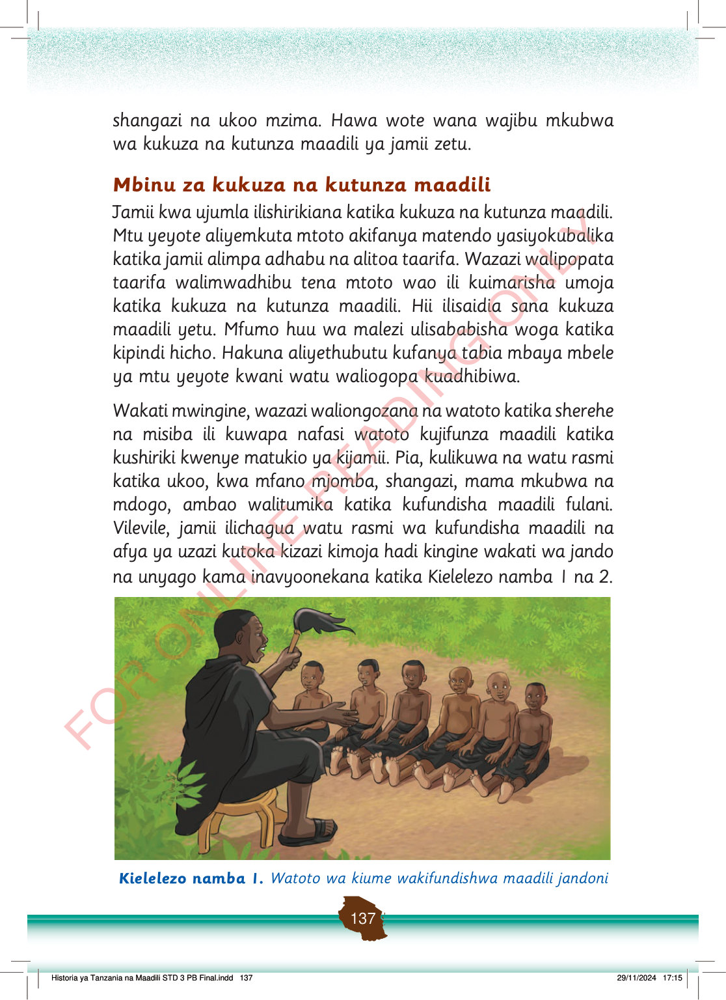

shangazi na ukoo mzima.
Hawa wote wana wajibu mkubwa wa kukuza na kutunza maadili ya jamii zetu.
Mbinu za kukuza na kutunza maadili
Jamii kwa ujumla ilishirikiana katika kukuza na kutunza maadili.
Mtu yeyote aliyemkuta mtoto akifanya matendo yasiyokubalika katika jamii alimpa adhabu na alitoa taarifa.
Wazazi walipopata taarifa walimwadhibu tena mtoto wao ili kuimarisha umoja katika kukuza na kutunza maadili.
Hii ilisaidia sana kukuza maadili yetu.
Mfumo huu wa malezi ulisababisha woga katika kipindi hicho.
Hakuna aliyethubutu kufanya tabia mbaya mbele ya mtu yeyote kwani watu waliogopa kuadhibiwa.
Wakati mwingine, wazazi waliongozana na watoto katika sherehe na misiba ili kuwapa nafasi watoto kujifunza maadili katika kushiriki kwenye matukio ya kijamii.
Pia, kulikuwa na watu rasmi katika ukoo, kwa mfano mjomba, shangazi, mama mkubwa na mdogo, ambao walitumika katika kufundisha maadili fulani.
Vilevile, jamii ilichagua watu rasmi wa kufundisha maadili na afya ya uzazi kutoka kizazi kimoja hadi kingine wakati wa jando na unyago kama inavyoonekana katika Kielelezo namba 1 na 2.
Mzee anakaa mbele ya watoto wa kiume na kuwafundisha maadili jandoni. Watoto wameketi chini wakimsikiliza kwa makini.
Kielelezo namba 1. Watoto wa kiume wakifundishwa maadili jandoni
Historia ya Tanzania na Maadili STD 3 PB Final.indd 137
29/11/2024 17:15